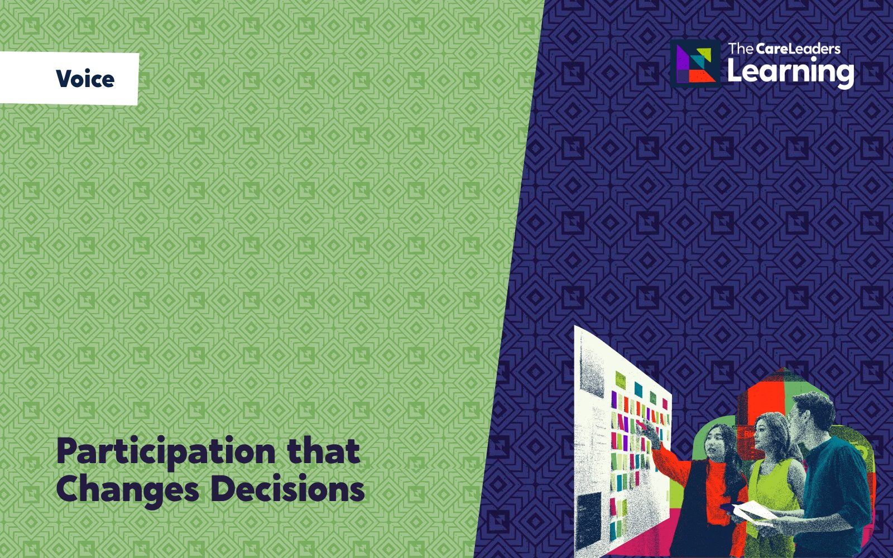

Would it be good enough for my child?
For councillors, directors and partner agencies who sit on or report to a corporate parenting board. You leave knowing what the seven corporate parenting principles ask of you personally, how to test a board paper against what children in care and care leavers say, and what every council department should be offering them. Decisions about children then get judged by what a good parent would accept.
- Length
- 6 hours face to face, usually 10am to 4pm. 2 hours live online
- How
- Face to face or live online
- Group
- Up to 60 people
- For
- Councillors, directors and corporate parenting partners

Corporate parenting boards often see dashboards rather than children. Members sign off performance reports without a clear sense of what good looks like to a 15-year-old in care or a 19-year-old in their first flat, and departments outside children’s services, such as housing, council tax and leisure, rarely see themselves as parents. Ofsted’s 2026 ILACS framework now gives care leavers’ experiences and progress a judgement of their own, and the Children’s Wellbeing and Schools Act 2026 will extend corporate parenting responsibilities to schools, colleges, NHS bodies and government departments. The board needs better questions and a direct line to children’s voices. This session gives you both: each part starts with a decision seen from the child’s side, sets out the duty or model behind it, and ends with something your board uses at its next meeting.
What changes
- Ask follow-up questions at board that move from a performance figure to the children behind it and what is happening for them.
- Test reports and decisions against one question: would this be good enough for my child?
- Ask each council department, and partners such as health, colleges and housing, to say what they offer children in care and care leavers, then follow it up.
- Hear directly from the Children in Care Council and care leavers, and report back to them on what changed.
- Check the local offer for care leavers against what young people say they actually use.
- Their views reach the board, and someone tells them what happened next.
- Housing, jobs, leisure and other council services push for them the way a parent would push for their own child.
- Decisions about where they live, their education and leaving care are judged against what a good parent would accept.
Story
- Describe how a board decision, such as where a care leaver is housed, feels from the young person’s side when nobody explains it to them.
- Recognise when a board report shows activity rather than children’s experiences, and ask the follow-up question that gets to the child.
Theory
- Explain the seven corporate parenting principles in section 1 of the Children and Social Work Act 2017, the wider duties in the Children’s Wellbeing and Schools Act 2026 and which partners they will apply to.
- Use Maslow’s hierarchy of needs (1943) to explain what each council department and partner should offer care leavers, and link the board’s work to the four ILACS judgements, including the separate judgement on care leavers.
Action
- Apply the “would it be good enough for my child?” test to a real decision from your service, and to a board paper.
- Map what each department offers children in care and care leavers, name who follows up each gap, and plan how the board will hear from young people and tell them what changed.
- Elected members, including lead members for children and newly elected councillors
- Corporate parenting boards and panels
- Directors, assistant directors and senior leadership teams from across the council, not only children’s services
- Partners who share the duty now or will under the 2026 Act: health, schools, colleges, housing and police
- Best run with one board or senior team together, from about 8 to 30 people. No background in children’s services is needed.
Session by session
 Story
Story Theory
Theory Action
Action
Every part opens with a decision seen from a young person’s side, sets out the duty or model behind it and ends with something your board uses at its next meeting. The stories are composites. They draw on real experiences of care but are not one person. Open a part to see what happens.
1The duty
Story. Kelsey, 17, finds out from a letter that she will have to leave her home when she turns 18. The decision was made at a panel by people she has never met. Nobody at the panel would have let that happen to their own daughter.
Theory. The seven corporate parenting principles in section 1 of the Children and Social Work Act 2017 ask the council to act as a good parent would: act in children’s best interests, hear their views and take them into account, help them use services, hold high aspirations, keep them safe with stable homes and relationships, and prepare them for adult life. We cover how the Children’s Wellbeing and Schools Act 2026 will extend those responsibilities to schools, colleges, NHS bodies and government departments.
Action. In pairs, members take one principle each and turn it into something they will personally do or ask at board, then test it against Kelsey’s letter: would that action have changed what happened to her?
By the end of this part people can name the seven principles, explain what each asks of them in their own role, and say which partners the 2026 Act brings into the duty.
 You leave with A one-page summary of the seven principles, each with an action for your board.
You leave with A one-page summary of the seven principles, each with an action for your board.
2The children
Story. Jodie, 15, is asked at her review what she wants. She says she wants to stay at her school. She moves anyway, and nobody tells her why.
Theory. Laura Lundy’s model of participation (2007) says hearing children takes four things: space, voice, audience and influence. Most boards have space and voice through their Children in Care Council. The test is whether the board is the audience that acts, and whether children see their influence. We bring in what your own Children in Care Council and care leavers’ forum have said.
Action. Members apply one question to two real decisions from your service: would it be good enough for my child? They rewrite each decision as it would look if their own child were the one affected, and agree what the board would need to see to be satisfied.
By the end of this part people can apply the “good enough for my child?” test to a decision and say what evidence would show it had been met.
 You leave with The “good enough for my child?” test, written up to use on any board paper.
You leave with The “good enough for my child?” test, written up to use on any board paper.
3The council
Story. Daniel, 19, has just moved into his first flat. In the same month he gets a council tax bill he cannot pay, is turned down for a gym discount and has no idea who to ask about an apprenticeship at the council that brought him up.
Theory. Maslow’s hierarchy of needs (1943) gives the board a simple way to see a care leaver’s life: a safe home and enough money first, then belonging, then the confidence to work and study. Each layer has a council department attached. The local offer for care leavers, which every council must publish under the Children and Social Work Act 2017, is where those departments show what they give. We cover what the 2026 Act will expect local offers to say on housing and money.
Action. Using your published local offer, members map what housing, council tax, jobs, leisure and other services offer against each layer of Daniel’s needs, mark the gaps and put a name next to each one.
By the end of this part people can explain which departments and partners hold responsibility for each part of a care leaver’s life, and name the gaps in their own local offer.
 You leave with A map of which departments offer what, with each gap and a named lead to follow it up.
You leave with A map of which departments offer what, with each gap and a named lead to follow it up.
4The board
Story. Dominic, 18, is one of the green figures on the dashboard: a care leaver in suitable accommodation. He is in a flat an hour away from his college and his friends, and he has stopped going to college.
Theory. A figure tells the board what is happening. Children tell it why. We link the board’s work to the four ILACS judgements, including the separate judgement on the experiences and progress of care leavers, and show where inspectors will look for evidence that the board hears children directly and acts on what they say.
Action. Using your own recent board papers, members practise turning a performance figure into questions about the children behind it, then plan how the board will hear directly from children in care and care leavers and how it will tell them what happened as a result. The session ends with the corporate parenting self-check and agreed owners.
By the end of this part people can turn a performance figure into a follow-up question about children, and agree how the board will report back to young people.
 You leave with The corporate parenting self-check for your board, with agreed next steps and owners.
You leave with The corporate parenting self-check for your board, with agreed next steps and owners.
Choose how you run it
We come to you for a board development day, a members’ seminar or a senior leadership away day, 10am to 4pm. The day covers all four parts using your own board papers, with time to build the questions you will take to your next board.
- Length
- One day, 10am to 4pm
- Group
- Up to 60 people
- You provide
- A room set up for small-group work, a screen with HDMI, recent board papers and your local offer for care leavers
A 2-hour live session on Teams or Zoom, covering the core of the course: the key story, theory and tool from each part, with the workbook and on-demand course to go deeper. It suits boards that meet online or members spread across a large area. Breakout rooms are used for the question practice.
- Length
- One 2-hour live session on Teams or Zoom
- Group
- Up to 60 people
- You provide
- Teams or Zoom with breakout rooms, cameras on for the activities, and board papers shared in advance
Included for every delegate: a workbook to keep, the recording of the session for 12 months, an interactive on-demand course on The Care Leaders Online for 12 months, and a certificate of completion.
Over 60 people, we bring a second facilitator so everyone still gets the time the activities need.
Questions commissioners ask
How is the day structured?
Four parts: the duty, the children, the council and the board. Each starts with a decision seen from a young person’s side, such as Kelsey learning from a letter that she has to leave her home at 18. Then the duty or model that explains it, from the seven corporate parenting principles to Laura Lundy’s model of participation and Maslow’s hierarchy of needs. Then something members do with your own material: the “good enough for my child?” test, a map of your local offer, and questions built from your own board papers. Face to face, a 6-hour day covers all four parts. Online, one 2-hour live session covers the core of each part. Send us a recent board report, your local offer for care leavers and any recent inspection findings beforehand, and we build the exercises around them.
Is this suitable for newly elected councillors?
Yes. New councillors are one of the groups it is written for, and it works well as part of member induction after elections. We start from what the duty asks of you and keep it practical, so people with no background in children’s services can use it at their next board.
Does it cover the Children’s Wellbeing and Schools Act 2026?
Yes. The Act received Royal Assent on 29 April 2026. Once the corporate parenting section is in force, it extends corporate parenting responsibilities to Secretaries of State, schools, further education colleges, NHS bodies, Ofsted and others. We cover what that means for the partners around your board table.
Can children in care or care leavers take part?
Yes, and we encourage it. Hearing directly from the children you are responsible for is part of the course. We plan with you how to involve them safely, how to prepare them, and how they will hear what the board did with what they said.
Who delivers it?
People with lived experience of care and professional experience of children’s services. Every course is designed by Luke Rodgers BEM and follows the same Story, Theory, Action approach.
How do you price it?
We quote per cohort, based on how many people, the format and how much tailoring you want. Tell us what you need and we will send you a clear quote.
Often booked with
 VoiceWorking Alongside Lived ExperienceHow to involve care-experienced people safely, fairly and in ways that last.6 hours face to face, 2 hours online
VoiceWorking Alongside Lived ExperienceHow to involve care-experienced people safely, fairly and in ways that last.6 hours face to face, 2 hours online Leaving care and workLeading Care Leavers at WorkTrauma-informed training for managers who employ care leavers.6 hours face to face, 2 hours online
Leaving care and workLeading Care Leavers at WorkTrauma-informed training for managers who employ care leavers.6 hours face to face, 2 hours online
VoiceParticipation that Changes DecisionsFor the people who run youth voice, and the managers who must act on it.6 hours face to face, 2 hours onlineTalk to us about Corporate Parenting in Practice
Tell us who it is for and roughly how many people. We will shape it around your service and send you a quote.